Next: Relation to existing systems Up: The semantics of the Previous: The semantics of the Contents
The primary model that we use to describe the semantics of lemon is inspired by this and views these tasks is that of an aligned semantic interpretation. Assume we have a language,  , on a vocabulary, 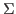, i.e.,
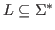. Say we have a lexicon, 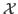, and we can define a language,
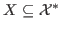, that constitutes all description of sentences in terms of the lexical entries it uses and the dependencies between the entries. Furthermore, we assume we have a lexicalization function
, on a vocabulary, 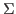, i.e.,
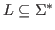. Say we have a lexicon, 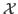, and we can define a language,
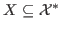, that constitutes all description of sentences in terms of the lexical entries it uses and the dependencies between the entries. Furthermore, we assume we have a lexicalization function  that maps a sentence in the language to a list of lexical representations taken from a lexicon, , that is that
that maps a sentence in the language to a list of lexical representations taken from a lexicon, , that is that  is a function with the signature:
is a function with the signature:
We call such an  a lexical interpretation and represents the result of the lexical parsing stages applied above, we simplify the definition here by assuming that this results in a single unambiguous representation relative to the lexicon.
a lexical interpretation and represents the result of the lexical parsing stages applied above, we simplify the definition here by assuming that this results in a single unambiguous representation relative to the lexicon.
Similarly assume we have an ontology 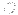, which can be used with a logic, 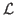, such that we have a language 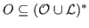. Again, we define a function 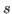 that maps a sentence in the language to its semantic representations, this function is called the semantic interpretation and has the signature:
This function is indicated to input the set of correct results from all the lexical, correspondence and reasoning based analysis processes.
For example we take a simple sentence “The man bites the dog,” we assume that the lexicon contains the entities
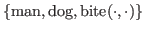 and the ontology contains two classes  and 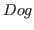 and a property 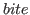. Now, for example, we could have the folllowing interpretations:
and 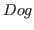 and a property 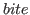. Now, for example, we could have the folllowing interpretations:
We may then define an aligment, 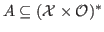 such that if we have 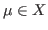, then for all 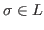 such that 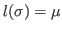, we have 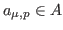 for each 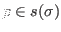. Furthermore we require that if 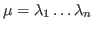, 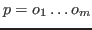 then we have 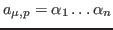 such that 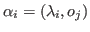 for some 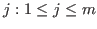.
We then define the set of senses in the lexicon,
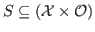, as the set satisfying
As such our example may be explained by the following:
This can be illustrated as follows:
We view the sense as having three aspects:
We define the lemon senseRelations, equivalent, narrower, broader and incompatible and their relationship to the ontology as follows:
| 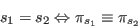 | (1) |
| 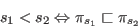 | (2) |
| 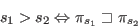 | (3) |
| 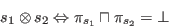 | (4) |
Theorem
If we have 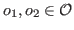 and some corresponding senses 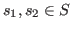 then the following hold:
Proof
As a motivating example for making this distinction consider the example of “student” and “person”, these are asserted to be hypernyms in WordNet however in a strict ontology sense are not in a subsumption (subclass) relation. In fact “student” is a role of a “person” and would not be modeled the same in a well-reasoned ontology (i.e., DOLCE, which would distinguish “student” as anti-rigid and “person” as rigid). However for certain tasks, such as coreference resolution, it is necessary to have these “lexical” semantics, and as such we include them within the lexicon. As such it is possible to state the “student“ is a narrower sense of “person”, without affecting the correctness or the ontology.
In the context of coreference this modelling can be used for word sense disambiguation and coreference as it contains lexical semantics that are weaker than those in the ontology. In particular, there are four relations defined in lemon that are used to aid these tasks: equivalent, disjoint, broader and narrower. Each of these can be understood in the following manner.
John McCrae 2012-07-31